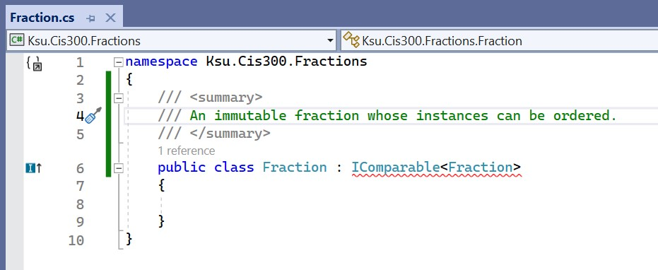

Multiple Implementations of Children
Multiple Implementations of Children
The trie implementation given in the previous section offers very efficient lookups - a word of length $ m $ can be looked up in $ O(m) $ time, no matter how many words are in the trie. However, it wastes a large amount of space. In a typical trie, a majority of the nodes will have no more than one child; however, each node contains a 26-element array to store its children. Furthermore, each of these arrays is automatically initialized so that all its elements are null. This initialization takes time. Hence, building a trie may be rather inefficient as well.
We can implement a trie more efficiently if we can customize the implementation of a node based on the number of children it has. Because most of the nodes in a trie can be expected to have either no children or only one child, we can define alternate implementations for these special cases:
- For a node with no children, there is no need to represent any children - we only need the bool indicating whether the trie rooted at this node contains the empty string.
- For a node with exactly one child, we maintain a single reference to that one child. If we do this, however, we won’t be able to infer the child’s label from where we store the child; hence, we also need to have a char giving the child’s label. We also need the bool indicating whether the trie rooted at this node contains the empty string.
For all other nodes, we can use an implementation similar to the one outlined in the previous section. We will still waste some space with the nodes having more than one child but fewer than 26; however, the amount of space wasted will now be much less. Furthermore, in each of these three implementations, we can quickly access the child with a given label (or determine that there is no such child).
Conceptually, this sounds great, but we run into some obstacles as soon as we try to implement this approach. Because we are implementing nodes in three different ways, we need to define three different classes. Each of these classes defines a different type. So how do we build a trie from three different types of nodes? In particular, how do we define the type of a child when that child may be any of three different types?
The answer is to use a C# construct called an interface. An interface facilitates abstraction - hiding lower-level details in order to focus on higher-level details. At a high level (i.e., ignoring the specific implementations), these three different classes appear to be the same: they are all used to implement tries of words made up of lower-case English letters. More specifically, we want to be able to add a string to any of these classes, as well as to determine whether they contain a given string. An interface allows us to define a type that has this functionality, and to define various sub-types that have different implementations, but still have this functionality.
A simple example of an interface is IComparable<T>. Recall from the section, “Implementing a Dictionary with a Linked List”, that we can constrain the keys in a dictionary implementation to be of a type that can be ordered by using a where clause on the class statement, as follows:
public class Dictionary<TKey, TValue> where TKey : notnull, IComparable<TKey>
The source code for the IComparable<T> interface has been posted by Microsoft®. The essential part of this definition is:
public interface IComparable<in T>
{
int CompareTo(T? other);
}
(Don’t worry about the in keyword with the type parameter in the first line.) This definition defines the type IComparable<T> as having a method CompareTo that takes a parameter of the generic type T? and returns an int. Note that there is no public or private access modifier on the method definition. This is because access modifiers are disallowed within interfaces — all definitions are implicitly public. Note also that there is no actual definition of the CompareTo method, but only a header followed by a semicolon. Definitions of method bodies are also disallowed within interfaces — an interface doesn’t define the behavior of a method, but only how it should be used (i.e., its parameter list and return type). For this reason, it is impossible to construct an instance of an interface directly. Instead, one or more sub-types of the interface must be defined, and these sub-types must provide definitions for the behavior of CompareTo. As a result, because the Dictionary<TKey, TValue> class restricts type TKey to be a sub-type of IComparable<T>, its can use the CompareTo method of any instance of type TKey.
Now suppose that we want to define a class Fraction and use it as a key in our dictionary implementation. We would begin the class definition within Visual Studio® as follows:
At the end of the first line of the class definition, : IComparable<Fraction> indicates that the class being defined is a
subtype of IComparable<Fraction>. In general, we can list one or
more interface names after the colon, separating these names with
commas. Each name that we list requires that all of the methods,
properties, and
indexers
from that interface must be fully defined within this class. If we hover
the mouse over the word, IComparable<Fraction>, a drop-down menu
appears. By selecting “Implement interface” from this menu, all of the
required members of the interface are provided for us:
In order to implement a method specified in an interface, we must define it as public.
We now just need to replace the throw with the proper code for the CompareTo method and fill in any other class members that we need; for example:
namespace Ksu.Cis300.Fractions
{
/// <summary>
/// An immutable fraction whose instances can be ordered.
/// </summary>
public class Fraction : IComparable<Fraction>
{
/// <summary>
/// Gets the numerator.
/// </summary>
public int Numerator { get; }
/// <summary>
/// Gets the denominator.
/// </summary>
public int Denominator { get; }
/// <summary>
/// Constructs a new fraction with the given numerator and denominator.
/// </summary>
/// <param name="numerator">The numerator.</param>
/// <param name="denominator">The denominator.</param>
public Fraction(int numerator, int denominator)
{
if (denominator <= 0)
{
throw new ArgumentException();
}
Numerator = numerator;
Denominator = denominator;
}
/// <summary>
/// Compares this fraction with the given fraction.
/// </summary>
/// <param name="other">The fraction to compare to.</param>
/// <returns>A negative value if this fraction is less
/// than other, 0 if they are equal, or a positive value if this
/// fraction is greater than other or if other is null.</returns>
public int CompareTo(Fraction? other)
{
if (other == null)
{
return 1;
}
long prod1 = (long)Numerator * other.Denominator;
long prod2 = (long)other.Numerator * Denominator;
return prod1.CompareTo(prod2);
}
// Other class members
}
}
The CompareTo method above is not recursive. The CompareTo method that it calls is a member of the long structure, not the Fraction class.
As we suggested above, interfaces can also include properties. For example, ICollection<T> is a generic interface implemented by both arrays and the class List<T>. This interface contains the following member (among others):
int Count { get; }
This member specifies that every subclass must contain a property called Count with a getter. At first, it would appear that an array does not have such a property, as we cannot write something like:
int[] a = new int[10];
int k = a.Count; // This gives a syntax error.
In fact, an array does contain a Count property, but this property is available only when the array is treated as an ICollection<T> (or an IList<T>, which is an interface that is a subtype of ICollection<T>, and is also implemented by arrays). For example, we can write:
int[] a = new int[10];
ICollection<int> col = a;
int k = col.Count;
or
int[] a = new int[10];
int k = ((ICollection<int>)a).Count;
This behavior occurs because an array explicitly implements the Count property. We can do this as follows:
public class ExplicitImplementationExample<T> : ICollection<T>
{
int ICollection<T>.Count
{
get
{
// Code to return the proper value
}
}
// Other class members
}
Thus, if we create an instance of ExplicitImplementationExample<T>, we cannot access its Count property unless we either store it in a variable of type ICollection<T> or cast it to this type. Note that whereas the public access modifier is required when implementing an interface member, neither the public nor the private access modifier is allowed when explicitly implementing an interface member.
We can also include indexers within interfaces. For example, the IList<T> interface is defined as follows:
public interface IList<T> : ICollection<T>
{
T this[int index] { get; set; }
int IndexOf(T item);
void Insert(int index, T item);
void RemoveAt(int index);
}
The : ICollection<T> at the end of the first line specifies that
IList<T> is a subtype of ICollection<T>; thus, the interface
includes all members of ICollection<T>, plus the ones listed. The
first member listed above specifies an indexer with a get accessor and a
set accessor.
Now that we have seen a little of what interfaces are all about, let’s see how we can use them to provide three different implementations of trie nodes. We first need to define an interface, which we will call ITrie, specifying the two public members of our previous implementation of a trie node. We do, however, need to make one change to the way the Add method is called. This change is needed because when we add a string to a trie, we may need to change the implementation of the root node. We can’t simply change the type of an object - instead, we’ll need to construct a new instance of the appropriate implementation. Hence, the Add method will need to return the root of the resulting trie. Because this node may have any of the three implementations, the return type of this method should be ITrie. Also, because we will need the constants from our previous implementation in each of the implementations of ITrie, the code will be more maintainable if we include them once within this interface definition. Note that this will have the effect of making them public. The ITrie interface is therefore as follows:
/// <summary>
/// An interface for a trie.
/// </summary>
public interface ITrie
{
/// <summary>
/// The first character of the alphabet we use.
/// </summary>
const char AlphabetStart = 'a';
/// <summary>
/// The number of characters in the alphabet.
/// </summary>
const int AlphabetSize = 26;
/// <summary>
/// Determines whether this trie contains the given string.
/// </summary>
/// <param name="s">The string to look for.</param>
/// <returns>Whether this trie contains s.</returns>
bool Contains(string s);
/// <summary>
/// Adds the given string to this trie.
/// </summary>
/// <param name="s">The string to add.</param>
/// <returns>The resulting trie.</returns>
ITrie Add(string s);
}
We will then need to define three classes, each of which implements the above interface. We will use the following names for these classes:
- TrieWithNoChildren will be used for nodes with no children.
- TrieWithOneChild will be used for nodes with exactly one child.
- TrieWithManyChildren will be used for all other nodes; this will be the class described in the previous section with a few modifications.
These three classes will be similar because they each will implement the ITrie interface. This implies that they will each need a Contains method and an Add method as specified by the interface definition. However, the code for each of these methods will be different, as will other aspects of the implementations. For example, the TrieWithNoChildren and TrieWithOneChild classes need private fields as described at the beginning of this section, whereas the TrieWithManyChildren classes needs the same private fields as outlined in the previous section. In each case, whenever we need to refer to a trie, we will use the type ITrie.
The Add methods for both TrieWithNoChildren and TrieWithOneChild will need to be able to construct instances of TrieWithOneChild and TrieWithManyChildren, respectively, when they have no room for the string being added. The instances they will need to construct will need information regarding the strings already being stored, plus the string being added; hence, we will need to define constructors for both TrieWithOneChild and TrieWithManyChildren. Each of these constructors will need to take the string being added as one of its parameters. Because the instance being constructed also needs to retain all of the information stored in the implementation that calls it, additional parameters for each of these constructors will correspond to the private fields of the implementation that will need to call it.
Thus, the parameters for the TrieWithOneChild constructor will be a string to be stored (i.e., the one being added) and a bool indicating whether the empty string is also to be stored (i.e., because it was stored in the original TrieWithNoChildren). Furthermore, because the empty string can always be added to a TrieWithNoChildren without constructing a new node, this constructor should never be passed the empty string. The constructor can then operate as follows:
- If the given string is null, throw an ArgumentNullException.
- If the given string is empty or begins with a character that is not a lower-case English letter, throw an exception.
- Initialize the bool field with the given bool.
- Initialize the char field with the first character of the given string.
- Initialize the ITrie field with the result of constructing a new TrieWithNoChildren and adding to it the substring of the given string following the first character.
The parameters for the TrieWithManyChildren constructor will need to be a string to be stored (i.e., the one being added), a bool indicating whether the empty string is to be stored, a char giving the label of a child, and an ITrie giving a child (these last three parameters will come from the original TrieWithOneChild). It can use the last three parameters to initialize its bool field and one of its children (computing the child’s index as in the previous section). It can then use its own Add method to add the given string, as there will always be room to add a string to this implementation; hence, it can ignore the value returned by the Add method. Furthermore, because the Add method does error checking on the given string, the only error checking this constructor needs to do is to check that neither the given string nor the given ITrie is null, and to verify that the given char is a lower-case English letter.
Aside from replacing the constants with those defined in the ITrie interface, the Contains method for TrieWithManyChildren can be exactly the same as for the implementation in the previous section. For the other two classes, the structure of the method is similar. Specifically, the empty string needs to be handled first (after checking that the string isn’t null) and in exactly the same way, as the empty string is represented in the same way in all three implementations. Nonempty strings, however, are represented differently, and hence need to be handled differently. This is easy for the TrieWithNoChildren class, as this implementation can’t store a nonempty string; hence, its Contains method should simply return false when the given string is nonempty. For TrieWithOneChild, we need to check to see if the first character of the given string matches the child’s label. If so, we can recursively look for the remainder of the string in that child. Otherwise, we should simply return false, as this string is not in this trie.
The Add method for TrieWithManyChildren needs some modification from the description given in the previous section. The most significant change is that this method must return the resulting trie, which will always be this, as this implementation never needs to be replaced by another to accommodate a new string. Also, the names of the constants need to be replaced by the constants defined in the ITrie interface. Finally, where a new child is constructed, it should be a TrieWithNoChildren, but any other occurrences of the type Trie should be replaced with ITrie.
The Add method for TrieWithNoChildren will need to handle a null or empty string in the same way as the above Add method. However, this implementation cannot store a nonempty string. In this case, it will need to construct and return a new TrieWithOneChild containing the string to be added and the bool stored in this node.
The Add method for TrieWithOneChild will need five cases:
- A null string: This case can be handled in the same way as for the other two classes.
- The empty string: This case can be handled in the same way as for the other two classes.
- A nonempty string whose first character is not a lower-case letter: An exception should be thrown.
- A nonempty string whose first character matches the child’s label: The remainder of the string can be added to the child using the child’s Add method. Because this method may return a different node, we need to replace the child with the value this method returns. We can then return this, as we didn’t need more room for the given string.
- A nonempty string whose first character is a lower-case letter but does not match the child’s label. In this case, we need to return a new TrieWithManyChildren containing the given string and all of the information already being stored.
Code that uses such a trie will need to refer to it as an ITrie whenever possible. The only exception to this rule occurs when we are constructing a new trie, as we cannot construct an instance of an interface. Here, we want to construct the simplest implementation — a TrieWithNoChildren. Otherwise, the only difference in usage as compared to the implementation of the previous section is that the Add method now returns the resulting trie, whose root may be a different object; hence, we will need to be sure to replace the current trie with whatever the Add method returns.